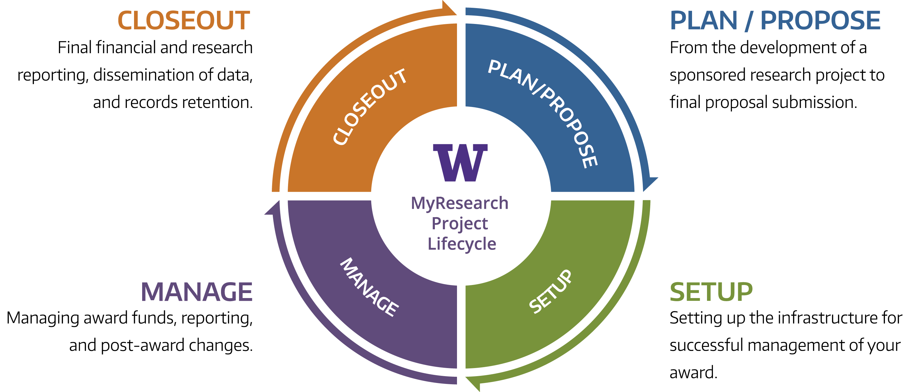
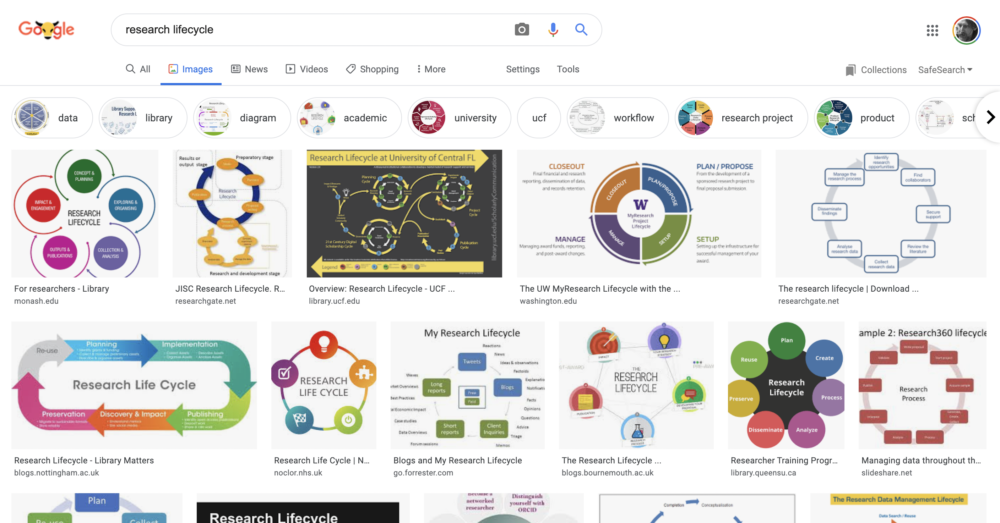
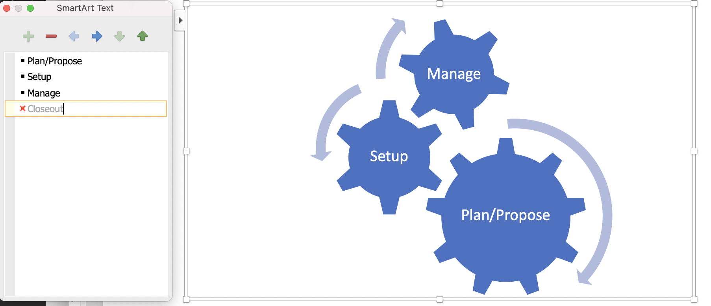
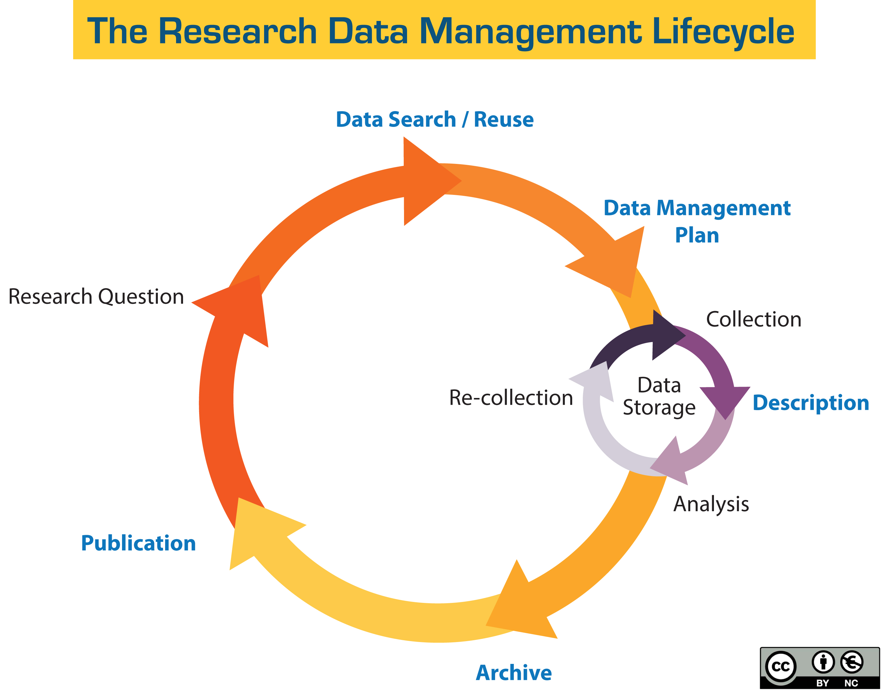

FAIR Data Management; It's a lifestyle not a lifecycle
2021-04-07
I have been working with my colleague Marco La Rosa on summary diagrams that capture some important aspects of Research Data Management, and include the FAIR data principles; that data should be Findable, Accessible, Interoperable and Reusable.
But first, here's a rant about some modeling and diagramming styles and trends that I do not like.
I took part in a fun Twitter thread recently kicked off by Fiona Tweedie.
Fiona Tweedie @FCTweedie So my current bugbear is university processes that seem to forget that the actual work of higher ed is doing research and/ or teaching. This "research lifecycle" diagram from @UW is a stunning example:
In this tweet Dr Tweedie has called out Yet Another Research Lifecycle Diagram That Leaves Out The Process Of You Know, Actually Doing Research. This process-elision happened more than once when I was working as an eResearch manager - management would get in the consultants to look at research systems, talk to the research office and graduate school and come up with a "journey map" of administrative processes that either didn't mention the actual DOING research or represented it as a tiny segment, never mind that it's, you know, the main thing researchers do when they're being researchers rather than teachers or administrators.
At least the consultants would usually produce a 'journey map' that got you from point A to Point B using chevrons to >> indicate progress and didn't insist that everything was a 'lifecycle'.
Something like:
Plan / Propose >> Setup >> Manage / Do Research >> Closeout
But all too commonly processes are represented using the tired old metaphor of a lifecycle.
Reminder: A lifecycle is a biological process; how organisms come into existence, reproduce and die via various means including producing seeds, splitting themselves in two, um, making love, laying eggs and so on.
It's really stretching the metaphor to talk about research in this way - maybe the research outputs in the UW "closeout" phase are eggs that hatch into new bouncing baby proposals?
Regrettably, arranging things in circles and using the "lifecycle" metaphor is very common - see this Google image search for "Research Lifecycle":
I wonder if the diagramming tools that are available to people are part of the issue - Microsoft Word, for example can build cycles and other diagrams out of a bullet list.
(I thought it would be amusing to draw the UW diagram from above as a set cogs but this happened - you can only have 3 cogs in a Word diagram.)
Research Data Management as a Cycle
Now that I've got that off my chest let's look at research data management. Here's a diagram which is in fairly wide use, from The University of California.
(This image has a CC-BY logo which means I can use it if I attribute it - but I'm not 100% clear on the original source of the diagram - it seems to be from UC somewhere.)
Marco used this one in some presentations we gave. I thought we could do better.
The good part of this diagram is that it shows research data management as a cyclical, recurring activity - which for FAIR data it needs to be.
What I don't like:
-
I think it is trying to show a project (ie grant) level view of research with data management happening in ONE spot on the journey. Typically researchers do research all the time (or in between teaching or when they can get time on equipment) not at a particular point in some administrative "journey map". We often hear feedback that their research is a lifetime activity and does not happen the way administrators and IT think it does.
-
"Archive" is shown as a single-step pre-publication. This is a terrible message; if we are to start really doing FAIR data then data need to be described and made findable and accessible ASAP.
-
The big so-called lifecycle is (to me) very contrived and looks like a librarian view of the world with data searching as a stand-alone process before research data management planning. Not clear whether Publication means articles or data.
-
"Data Search / Reuse" is a type of "Collection", and why is it happening before data management planning? "Re-Collection" is also a kind of collection, so we can probably collapse all those together (the Findable and Accessible in FAIR).
-
It’s not clear whether Publication means articles or data or both.
-
Most research uses some kind of data storage but very often not directly; people might be interacting with a lab notebook system or a data repository - at UTS we arrived at the concept of "workspaces" to capture this.
The "Minimum Viable FAIR Diagram"
Marco and I have a sketch of a new diagram that attempts to address these issues and addresses what needs to be in place for broad-scale FAIR data practice.
Two of the FAIR principles suggest services that need to be in place; ways to Find and Access data. The I and R in FAIR are not something that can be encapsulated in a service, as such, rather they imply that data are well described for re-use and Interoperation of systems and in Reusable formats.
As it happens, there is a common infrastructure component which encapsulates finding data and accessing; the repository. Repositories are services which hold data and make it discoverable and accessible, with governance that ensures that data does not change without notice and is available for access over agreed time frames - sometimes with detailed access control. Repositories may be general purpose or specialized around a particular type of data: gene sequences, maps, code, microscope images etc. They may also be ad-hoc - at a lab level they could be a well laid out, well managed file system.
Some well-funded disciplines have established global or national repositories and workflows for some or all of their data, notably physics and astronomy, bioinformatics, geophysical sciences, climate and marine science. Some of these may not be thought of by their community as repositories - but according to our functional definition they are repositories, even if they are "just" vast shared file systems or databases where everyone knows what's what and data managers keep stuff organized. Also, some institutions have institutional data repositories but it is by no means common practice across the whole of the research sector that data find their way into any of these repositories.
Remember: data storage is not all files-on-disks. Researchers use a very wide range of tools which may make data inaccessible outside of the tool. Examples include: cloud-based research (lab) notebook systems in which data is deposited alongside narrative activity logs; large shared virtual laboratories where data are uploaded; Secure eResearch Platforms (SERPs) which allow access only via virtualized desktops with severely constrained data ingress and egress; survey tools; content management systems; digital asset management systems; email (yes, it's true some folks use email as project archives!); to custom-made code for a single experiment.
Our general term for all of the infrastructures that researchers use for RDM day to day including general purpose storage is “workspaces”.
Many, if not most workspaces do not have high levels of governance, and data may be technically or legally inaccessible over the long term. They should not be considered as suitable archives or repositories - hence our emphasis on making sure that data can be described and deposited into general purpose, standards-driven repository services.
The following is a snapshot of the core parts of an idealised FAIR data service. It shows the activities that researchers undertake, acquiring data from observations, instruments and by reuse, conducting analysis and data description in a working environment, and depositing results into one or more repositories.
We wanted it to show:
-
That infrastructure services are required for research data management - researchers don't just "Archive" their data without support - they and those who will reuse data need repository services in some form.
-
That research is conducted using workspace environments - more infrastructure.
We (by which I mean Marco) will make this prettier soon.
And yes, there is a legitimate cycle in this diagram it's the FIND -> ACCESS -> REUSE -> DESCRIBE -> DEPOSIT cycle that's inherent in the FAIR lifestyle.
Things that might still be missing:
-
Some kind of rubbish bin - to show that workspaces are ephemeral and working data that doesn't make the cut may be culled, and that some data is held only for a time.
-
What do you think's missing?
Thoughts anyone? Comments below or take it up on twitter with @ptsefton.
(I have reworked parts of a document that Marco and I have been working on with Guido Aben for this document, and thanks to recent graduate Florence Sefton for picking up typos and sense-checking).